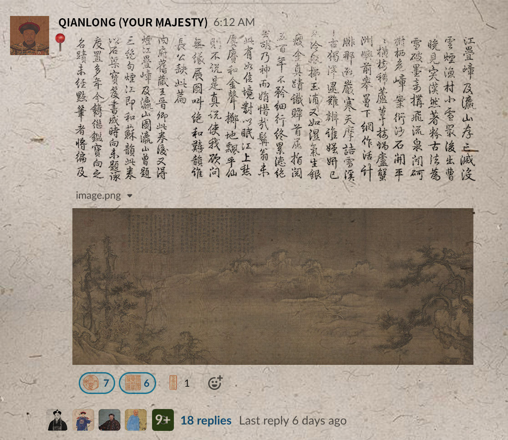

Xintong
The ancient Slack
Due Date: Oct,28 2020
Guiding Question
We are using all kind of social softwares nowadays. What would those softwares be like in the ancient time?
Introducion
This is a sudden discovery of how ancient people in China used their ancient Slack.
Inspiration
Discovery: The Chinese ancient Slack system
Today I went to the exhibition called "The Man of Centuries" in National Palace Museum, it's a special exhibition of Su shi's calligraphy and painting theme. The exhibits in the exhibition hall are extraordinary, all of which are great paintings and calligraphy works. One of them caught my attention, not because of how special the picture is, but because of the interesting content of it.
This is a painting collected by Emperor Qianlong, with the critics of the court ministers.

Wang Xu, Snow in Fishing Village, Northern Song Dynasty, silk, ink and color, 44.5 x 219.5 cm
I suddenly realized that they were using "slack"!
The Emoji system
Emperor Qianlong liked to stamp his collection of art works, he stamped the paintings and calligraphy, indicating that it was his own. These various seals expressed Qianlong's love for the works.
It's kind of like his personal emoji when leaving comments.
The comment system
This is Qianlong's comment about Snow in Fishing Village.
This is the ministers' critics about Snow in Fishing Village following Qianlong's comment, expressing the feeling "we humbly fell the same".
Quite similar to our following replies to somebody's comment.
Prototype
Make a slack channel for Emperor Qianlong and his ministers
Qianlong's emoji board
Qianlong's discussion board
